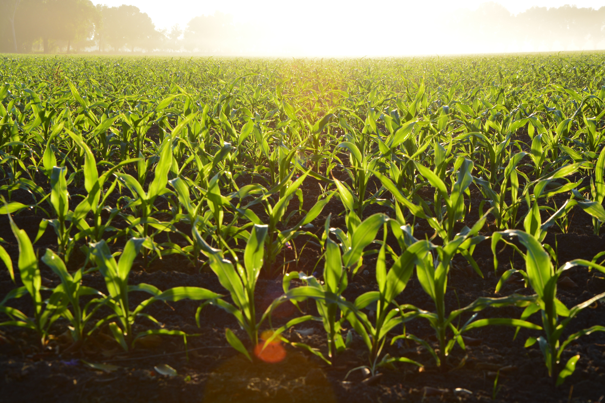

The Goodness of the Lord
in the land of the living
Welcome!
VCC is a vibrant church family, full of great people. We are a good-sized church of about 700 adults with lots of kids and youth. Our passion is to produce a culture that encourages our people to have repeated supernatural, life-changing encounters with the love and power of God. We love to worship, pray, study the Bible, fellowship and purposefully reach out to our neighborhood through practical service and demonstration of the compassionate power of Jesus to save and heal. Come join us!
Ministries
VCC places an extremely high value on worship. From the very beginning of our church, our people have been reaching out to God with their whole hearts to love and experience Him in a dynamic and intimate way. God, in His generous way, has responded to us by giving us wonderful times together when we have felt His Presence and have come to know Him more.
This passion for worship will always be a fundamental value of VCC. It's safe to say that God has made the joy of worshipping Him one of the strong points in our church, providing the foundation for everything else we do.
Special Events
The British use the term "header", but the American term "head-shot" the English simply refuse to adopt.